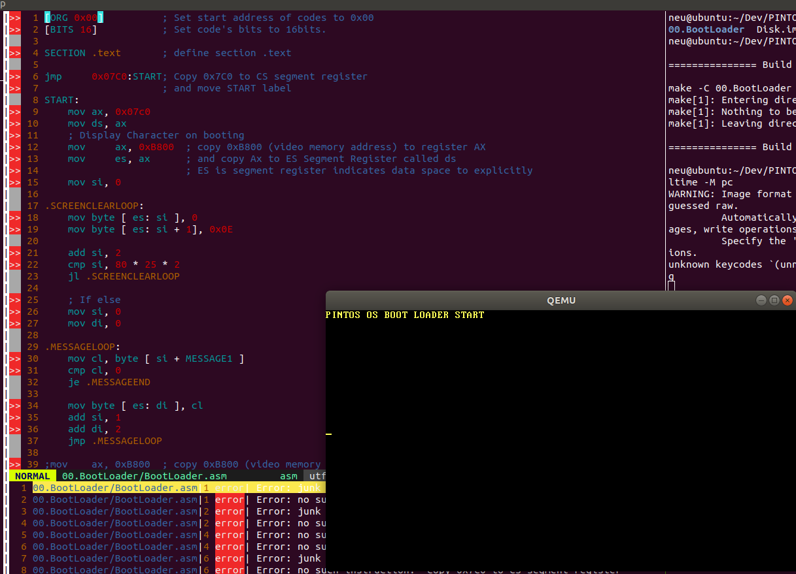

Read a Week (4th Week Nov 17)
How do computers read code? - A great video explaining the basics of how compilers turn high-level software into machine code
[번역]알고리즘과 자료구조를 즐겁게 배울 수 있는 앱을 만들어 보았다
좋은 코드를 고민하는 주니어 개발자들을 위한 안드로이드 디자인 패턴
DashGL
Thursday

잠깐 기분 전환 차, 리눅스 가상 머신에서 OpenGL 과 OS 개발을 책이나 튜토리얼을 보면서 따라하고 있다. vim 으로 코딩을 하는 게 조금 불편하긴 하지만 이전보다는 환경 세팅이 잘 넘어가져서 나름 칠만은 하다고 느낀다. 이제 남은 것은 코딩을 하면서 의존성 패키지가 꼬이지 않기만을 우주에게 간절히 바라는 것 뿐 (…)
ps. 지금 만들고 있는 OS 의 이름은 PINTOS (Practical INTeligent Operating System) 이다. 말 그대로 연습용으로 만들어 본다는 뜻.